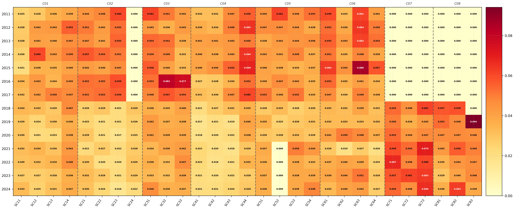
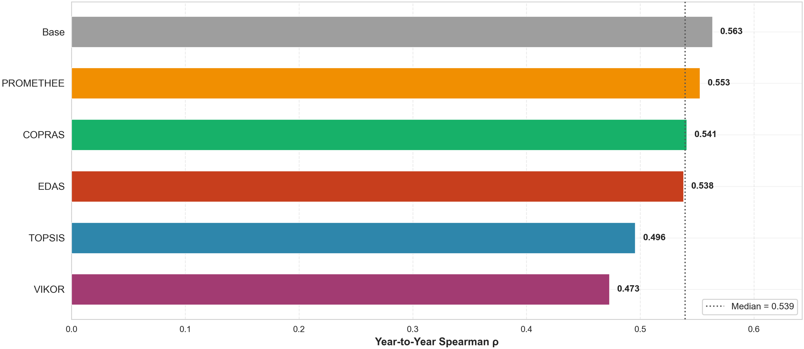
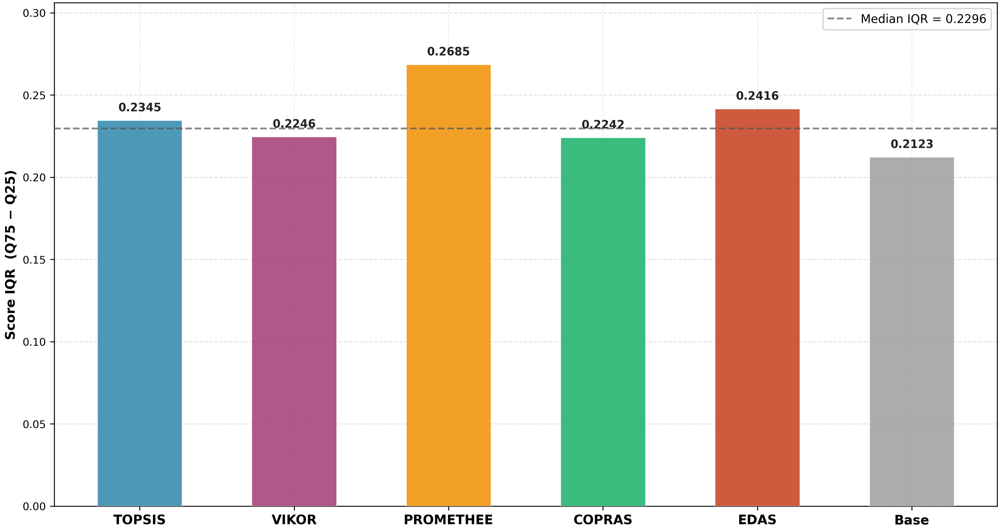
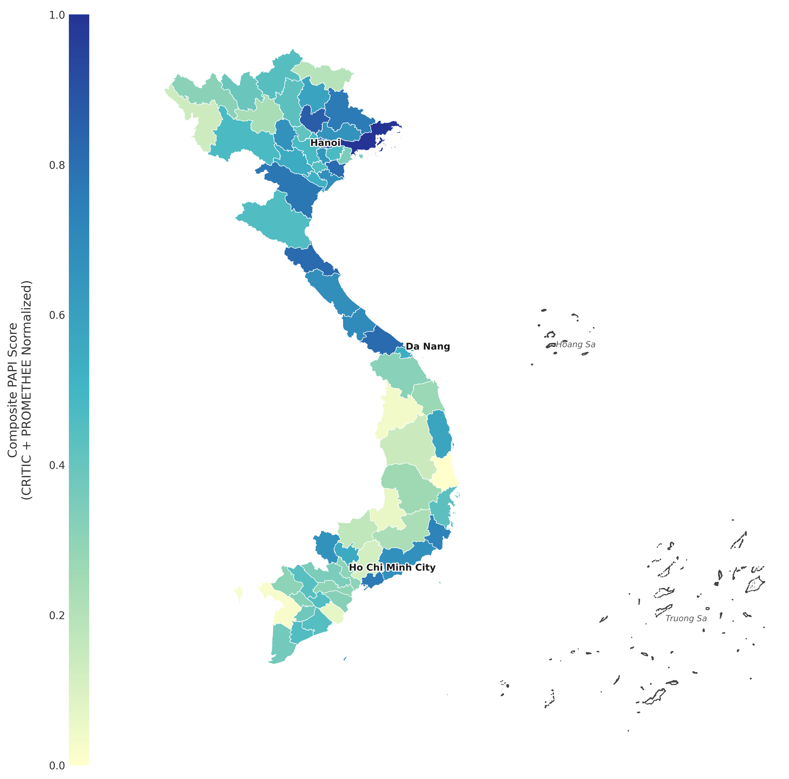
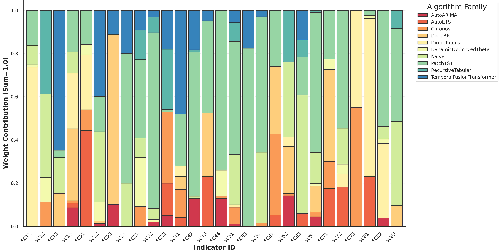
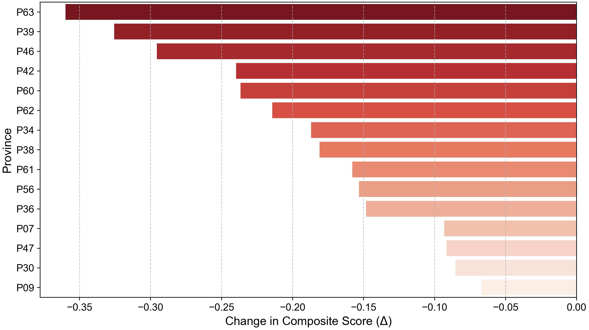
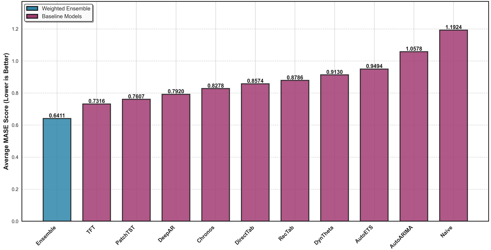

2026 Poster Prize
Student Scientific Research
Vietnam National University, Hanoi
From Retrospective Benchmarking to Anticipatory Policy: A Data‑Driven Framework for
Governance Indexing and Forecasting Using the Viet Nam Provincial Governance and
Public Administration Performance Index (PAPI)
1.
Introduction
Problem Statement
- Current subnational governance indices (PAPI, PCI) are predominantly retrospective and rely on equal-weighting defaults.
- This limits capacity to provide forward-looking signals and early warnings for proactive policymaking.
- A data-driven, anticipatory framework is urgently needed across Vietnam’s 63 provinces.
Research Objectives
- Develop a hybrid governance framework combining Two-Level Hierarchical CRITIC Weighting with multi-window temporal stability validation (RMSD, Spearman’s ρ, Kendall’s W, Monte Carlo sensitivity).
- Establish a multi-methodological MCDM Consensus Ranking framework (TOPSIS, VIKOR, PROMETHEE II, COPRAS, EDAS) to transcend single-method idiosyncrasy, validate inter-method concordance, and identify an optimal ranking function.
- Generate probabilistic projections for 2025 to operationalize an institutional Early Warning System for subnational governance.
2.
Methods & Data
Data Description
- Balanced panel dataset from PAPI (2011–2024) across all 63 provinces of Viet Nam.
- 2011–2017: 6 criteria (C01–C06), comprising 21 sub-criteria.
- 2018–2024: Expanded to 8 criteria, adding C07: Environmental Governance and C08: E-Governance, totalling 29 sub-criteria (SC11–SC83).
Three-Tier Methodological Framework
PAPI Longitudinal Panel 2011–2024
↓
TIER 1 — Two-Level Hierarchical CRITIC Weighting
Level 1: Sub-criterion weights within criteria · Level 2: Cross-criteria weights
capturing contrast intensity
↓
TIER 2 — Multi-Method MCDM Consensus Ranking
TOPSIS · VIKOR · PROMETHEE II · COPRAS · EDAS
↓
TIER 3 — AutoGluon Stacked Ensemble Forecasting (2025)
10 diverse base learners: Statistical · Tabular ML · Deep Learning ·
Chronos foundation model
3.
Weighting & Ranking Results

Fig. 1 — Sub-criterion weight heatmap (2011–2024)
Table 1 — Mean CRITIC Criterion Weights
| Criterion | Mean Wt. | CV | Informational Role |
|---|---|---|---|
| C01: Local Participation | 0.149 | Lowest weight variance (most consistent) | |
| C02: Transparency | 0.230 | Lowest weight among long-standing criteria | |
| C03: Vertical Accountability | 0.211 | Moderate information value | |
| C04: Control of Corruption | 0.317 | Highest temporal weight volatility | |
| C05: Public Admin. Procedures | 0.213 | Highly stable administrative priority | |
| C06: Public Service Delivery | 0.238 | Primary differentiator across provinces | |
| C07: Env. Governance (since 2018) | 0.142 | Graceful integration of index expansion | |
| C08: E-Governance (since 2018) | 0.157 | Graceful integration of index expansion |
Key Findings & Validation

Fig. 2 — Rank stability over time

Fig. 3 — Ranking discriminatory power (Score IQR)
4.
Forecasting Results (2025)
0.6411
Ensemble MASE
Well below 1.0 naive baseline
+14.12%
vs. Best Single (TFT)
TFT baseline MASE = 0.7316
+86.0%
vs. Naive Baseline
Naive MASE = 1.1924

Fig. 4 — 2025 Provincial Governance Forecast (PROMETHEE II scores)
Leading Cluster
Quang Ninh1.000
Thai Nguyen0.862
Bac Ninh0.855
Ha Tinh0.819
Lagging Cluster
Phu Yen0.000
Kien Giang0.020
Kon Tum0.037
Dak Nong0.060
Metropolitan
Hanoi0.477
Ho Chi Minh0.302
Moderate scores reflect urbanisation-driven service scaling challenges.

Fig. 5 — AutoGluon stacked ensemble model family weight distribution

Fig. 6 — Composite PAPI score decline forecast

Fig. 7 — MASE comparison: ensemble vs. baselines
5.
Discussion & Policy Implications
Projected Governance Contractions
- 29 of 63 provinces are projected to experience governance contractions in 2025.
- Systemic bottlenecks: Internet Access (SC82) and Civic Knowledge (SC11) signal issues in digital administration and grassroots civic engagement.
- Top declines: Ca Mau (~50%), Dak Lak (~48%), Quang Ngai (41.12%), Binh Thuan (32.55%).
5-Pillar Policy Response Matrix
| Policy Pillar | Target Sub-Criteria | Regulatory & Operational Response |
|---|---|---|
| 1Digital Access & E-Governance | SC82 Internet AccessSC81 E-Gov Portals |
|
| 2Civic Engagement & Grassroots Democracy | SC11 Civic KnowledgeSC14 Voluntary Contrib.
|
|
| 3Accountability & Anti-Corruption | SC23 Budget Trans.SC42 Corruption Control |
|
| 4Environmental & Resource Governance | SC73 Water QualitySC71 Env. Protection |
|
| 5Tiered Governance Compact (TGC) | Composite Scores |
|
6.
Conclusion
Academic Contribution
Bridges static MCDM ranking with dynamic temporal ML forecasting, defining
a replicable methodology for Anticipatory Governance in developing economies.
Policy Value
Transitions subnational governance from retrospective benchmarking to
proactive one-year-ahead early-warning interventions at scale.
Reproducibility
Code repositories and processed datasets are published as open-source
assets for full scientific reproducibility and peer replication.